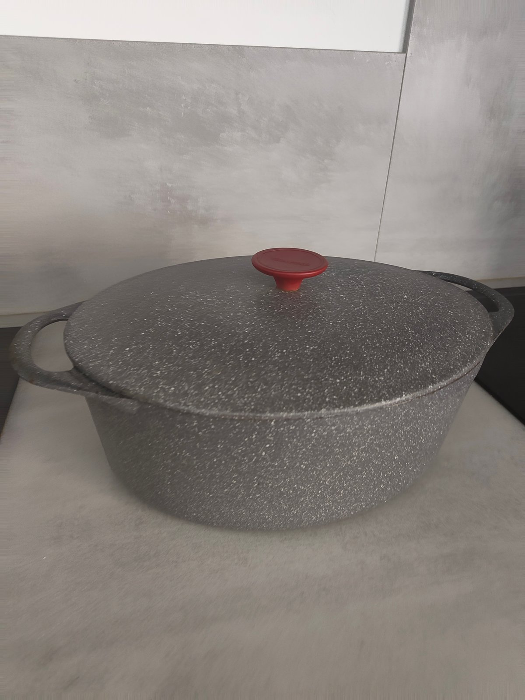
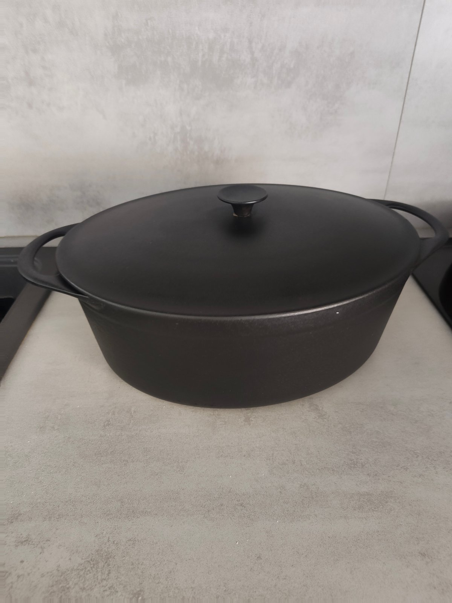
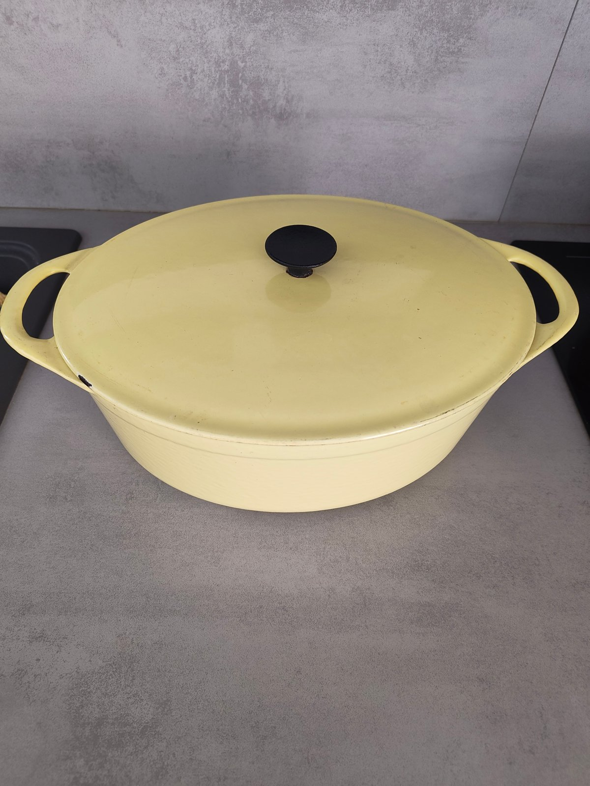
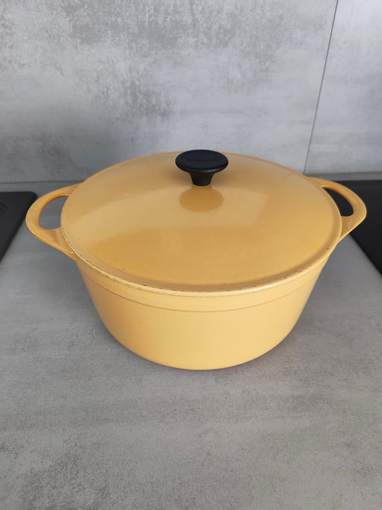
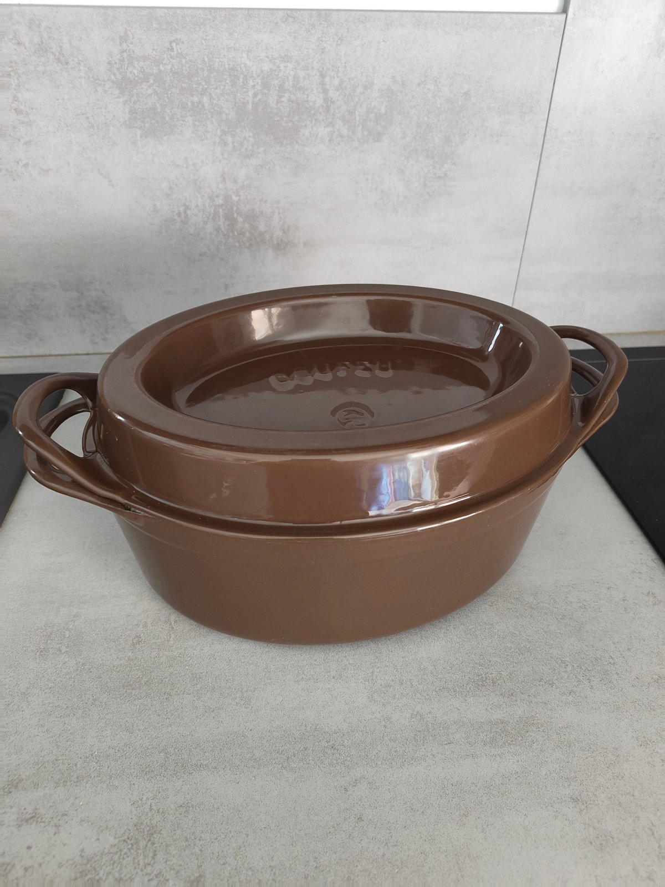
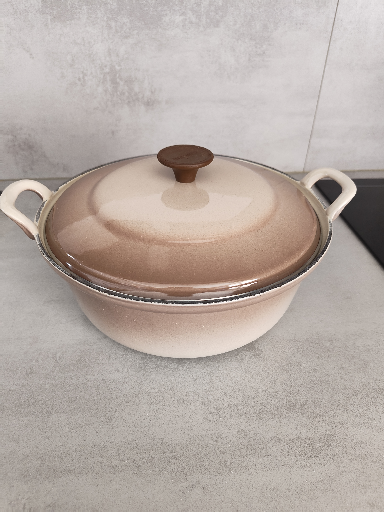

Vintage Cousances Cast Iron
Cousances takes its name from its foundry village, Cousances-les-Forges in the Meuse, in eastern France. Le Creuset says it bought Cousances in 1957, which is why many pieces carry both names.
Our Cousances pieces include Doufeu casseroles, whose hollow lid can hold cold water or ice to encourage condensation during slow cooking, as well as round and oval cocottes and crêpe pans. Each listing shows the markings and size numbers as they appear on the object.
For the history of Cousances and how it compares with the other French enamelled cast iron makers, read our guide.
Available now (12)

Le Creuset / Cousances – Doufeu Cast Iron Cocotte
120€

Vintage Cousances by Le Creuset Cast Iron Cocotte No. 23 – Made in France – 1980s
120€

Vintage Cousances by Le Creuset Oval Cocotte – Flame Red / Volcanique – Size 28 – Made in France
105€

Rare Vintage Mini Cousances Cocotte – Le Creuset Group – Orange Enameled Cast Iron Collectible
55€

Cousances / Le Creuset – Cast Iron Casserole Dish – Model 16 – 31 cm
130€

Le Creuset / Cousances – Cast Iron Casserole Dish – Model 16 – Vintage – Black
80€

Le Creuset, Cousances – Cast iron casserole dish – Rare model
80€

Vintage Cousances Crêpière en Fonte – Made in France – Groupe Le Creuset
85€

Cousances Cast Iron Dutch Oven No. 24 – Made in France – Vintage Enameled Casserole
110€

Cousances Doufeu Cast Iron Casserole – Brown – Made in France – Vintage Dutch Oven
130€

Vintage Cousances Cast Iron Dutch Oven No. 24 – Rare – Made in France – Enameled Casserole
110€

Vintage Cousances Cast Iron Dutch Oven Size G – Yellow – Made in France – Rare Large Casserole
150€
More from the collection
Vintage Le Creuset · Designer cookware · All available pieces · Previously sold pieces